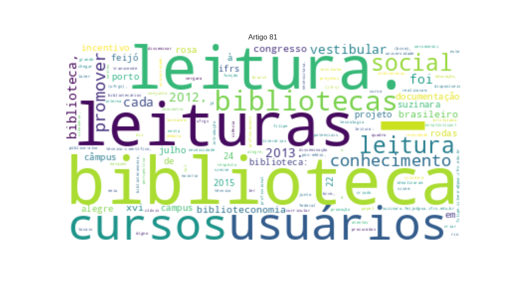

81 - FEIJÓ, Suzinara da Rosa_Projeto de incentivo a leitura em biblioteca_as rodas de leitura no IFRS, campus Porto Alegre.txt

XVI
Congresso Brasileiro de Biblioteconomia
LOC
e Documentação 22 a 24 de julho de 2015
PROJETO
ORG
DE INCENTIVO À
LEITURA
ORG
EM
BIBLIOTECA
MISC
: as rodas de leitura no
IFRS Câmpus Porto Alegre Suzinara da Rosa Feijó
LOC
–
IFRS Campus Porto Alegre
PER
– suzinara.feijo@poa.ifrs.edu.br
Filipe Xerxeneski
PER
da Silveira –
IFRS Campus Porto Alegre
PER
– filipe.silveira@poa.ifrs.edu.br INTRODUÇÃO O papel da biblioteca no que diz respeito às atividades de incentivo e promoção da leitura transcende o domínio do ato de ler e o acesso às obras literárias disponíveis no acervo. É função social das bibliotecas, especialmente no meio acadêmico, além de disseminar o conhecimento técnico-científico, promover à comunidade projetos que visem ao incentivo e a disseminação da leitura. Atentos a estas questões, os bibliotecários da
Biblioteca Clóvis Vergara Marques
LOC
(
BCVM
ORG
), do
Instituto Federal de Educação, Ciência e Tecnologia do Rio Grande do Sul
LOC
(
IFRS
LOC
) –
Câmpus Porto Alegre
LOC
, em conjunto com acadêmicas do
Curso Técnico
LOC
em
Biblioteconomia
LOC
, que realizavam estágio curricular obrigatório nesta Biblioteca e, com os demais servidores do quadro efetivo da
BCVM
ORG
, idealizaram um projeto intitulado:
Rodas de Leitura
MISC
: leituras obrigatórias do
Vestibular
MISC
da UFRGS 2013. Este projeto foi criado devido à necessidade de promover a biblioteca e a leitura junto à comunidade interna e externa, uma atividade que viesse ao �encontro do que o público-alvo desta biblioteca mais necessitava.
Estatísticas1
MISC
comprovavam, que as obras das leituras obrigatórias do vestibular da
Universidade Federal do Rio Grande do Sul
LOC
(
UFRGS
LOC
), estavam sempre entre as mais procuradas pelos usuários da
BCVM
ORG
, já que nossos cursos são pós-médio, ou seja, a perspectiva de nossos usuários potenciais é chegar à universidade. Embora a realidade da maioria das bibliotecas no
Brasil
LOC
seja de espaços com acervos desatualizados e com profissionais que deixam de criar atividades para tornarem a biblioteca um ambiente digno de lazer e cidadania, o profissional que atua nestes locais tem a responsabilidade social de intermediar a leitura entre os usuários e a informação e, consequentemente, o conhecimento registrado ao longo dos tempos.
RELATO
PER
DA
EXPERIÊNCIA
ORG
A BCVM do
IFRS – Câmpus Porto Alegre
LOC
é uma biblioteca que atende às necessidades de cursos superiores e técnicos que são oferecidos na instituição. O acervo da biblioteca, além de obras específicas para as áreas dos cursos que o
IFRS
MISC
ministra, contempla um acervo de literatura brasileira e estrangeira. Neste sentido, idealizou-se, no início de 2012, o
Projeto Rodas de Leitura
MISC
: as leituras obrigatórias para o vestibular da
UFRGS
LOC
2013. Conforme resolução do
CEPE
ORG
-
Conselho de Ensino
ORG
,
Pesquisa
LOC
e
Extensão
LOC
, a partir do
Concurso Vestibular
LOC
2007 a lista de leituras obrigatórias para a prova de
Literatura
MISC
de
Língua Portuguesa
MISC
tem se renovado ano a ano, sempre com a substituição de quatro obras. Para o vestibular de 2013, a
UFRGS
LOC
apresentou as 12 obras aos vestibulandos. Foram elas: “Obras poéticas”, de
Gregório de Matos Guerra
PER
; “
O Guardador de Rebanhos
MISC
”, de
Alberto Caeiro
PER
(heterônimo de
Fernando Pessoa
PER
);
Relatórios
PER
extraídos do software
Aleph
PER
compartilhado até 2013 com sistema de bibliotecas da
UFRGS
LOC
,
SABi UFRGS – Catálogo
ORG
online. �“
Memórias de um Sargento de Milícias
MISC
”, de
Manuel Antônio de Almeida
PER
;
“Esaú
PER
e
Jacó
PER
”, de
Machado de Assis
PER
; “A Educação pela Pedra”, de
João Cabral de Melo Neto
PER
;
“História do Cerco de Lisboa
MISC
”, de
José Saramago
PER
; “
O Centauro no Jardim
MISC
”, de
Moacyr Scliar
PER
;
“Contos Gauchescos
PER
”, de
João Simões Lopes Neto
PER
;
“Manuelzão e Miguilim
PER
(
Campo Geral
LOC
e Uma estória de amor)”, de
Guimarães Rosa
PER
; “
O Pagador de Promessas
MISC
”, de
Dias Gomes
PER
;
“Feliz Ano Novo
MISC
”, de
Rubem Fonseca
PER
; e “
O Filho Eterno
MISC
”, de
Cristóvão Tezza
PER
. Na última quinta-feira de cada mês, durante 07 meses do ano de 2012, a
BCVM
ORG
promoveu encontros para debater algumas obras dentre as listadas acima. Neste sentido, buscou-se ampliar os conhecimentos acerca dos gêneros literários debatidos em cada roda, enriquecendo as possibilidades de antecipações e interpretações dos participantes. CONSIDERAÇÕES
FINAIS
MISC
O
Projeto Rodas de Leitura
MISC
demonstra que estamos no caminho certo, visto que nas edições propostas no projeto, tivemos sempre a casa lotada. Afinal, tem se falado muito que a leitura em ambientes tradicionais, quer sejam bibliotecas ou centros culturais, está fadada ao desaparecimento. Não foi o que observamos com a execução do
Rodas de Leitura
MISC
.
Presenciamos
PER
, em nossa biblioteca, leitores das mais diferentes faixas etárias ouvindo, alguns intervindo, uns mais timidamente e outros nem tanto, e interagindo com os palestrantes convidados. Palavras-chave: Promoção da leitura. Incentivo à leitura. Projetos de leitura. �